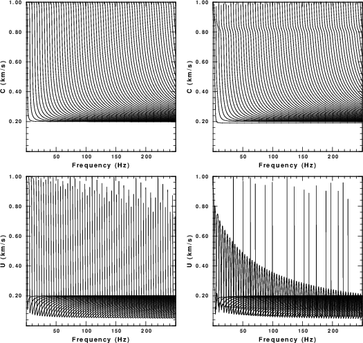
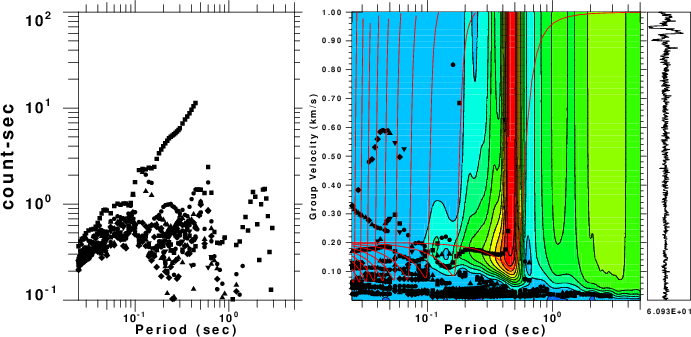
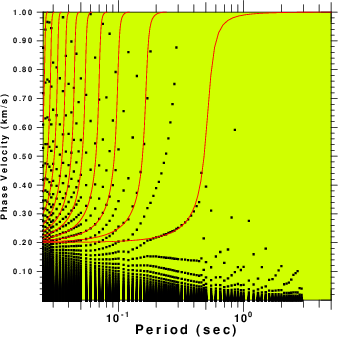
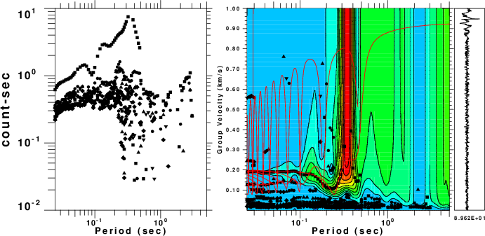
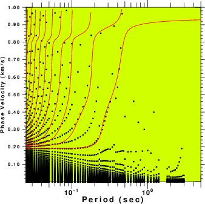

The purpose of this tutorial is to generate surface-wave noise for a known 1-D structural model by applying randomly oriented point sources at the surface of the structure and then propagating the 3-D ground motion to two receivers. The ground motions consist of multimode Rayleigh and Love waves.
After generating a realistic noise sequence of 900 seconds length
with a sampling interval of 0.002 sec, these noise segments are
then cross-correlated and stacked to form the empirical Green’s
function. The noise generation is done by the DOITHF script and
the cross-correlation and stacking by the DOSTKZNE script.
This tutorial is set up to emulate real data acquisition. The
total record of 900 sec at 0.002 sec sampling and receivers 100
meters apart is reasonable for a field study.
Many details of processing to determine the empirical Greens
functions by cross-correlation have been simplified. For real data
I have only applied a frequency domain whitening before
cross-correlation. Since tis simulation assumes noise sources
equally spaced in origin time, the records may be very spiky. I
had no luck with these simulations. However, if I applied a AGC to
the cross-correlation time series before stacking, then I got
something that gave acceptable results for analysis using do_mft.
The value of these scripts is that then be modified through the
use of different velocity models or different distances between
the two receivers. As the seapration distance is made
smaller, I would expect that it will be difficult to get
dispersion data at the longer periods. There may also be a problem
with the many modes arriving, so that a dispersion mode may not be
able to be identified.
The other caution is that this script is set up to emulate a high frequency data acquisition where cartesian coordinates are appropriate. Anotehr script will have to be written to emulate data sets for stations widely separated, e.g., the TArray of USArray, where geocentric coodrinates have to be used.
This exercise is contained in the gzip’d tar file HFAMBIENTNOISE.tgz
After downloading execute the following commands:
HFAMBIENTNOISE.dist/ HFAMBIENTNOISE.dist/DISP.PLT HFAMBIENTNOISE.dist/DOITHF HFAMBIENTNOISE.dist/DOSTKZNE HFAMBIENTNOISE.dist/Models/ HFAMBIENTNOISE.dist/Models/CUS.mod HFAMBIENTNOISE.dist/Models/soil.mod HFAMBIENTNOISE.dist/Models/soilm2.mod HFAMBIENTNOISE.dist/Models/tak135sph.mod
This shell script performs the simulation. It has many comment lines to describe each operation. The initial part of the shell script defines the parameters that control the results. The reason for writing the script in this manner is so that much of it can be used to simulate the noise fields at two stations so that ambient noise cross-correlation techniques could be used to estimate the empirical Green's function.
For the example here, we consider the velocity model HFAMBIENTNOISE.dist/Models/soilm2.mod. The dispersion curves for this model are given Figure 1. The fundamental and higher modes are plotted. In this simulation the effects of Q are not considered since the eigenfunction programs were executed tith the -NOQ flag, e.g., sregn96 -NOQ and slegn96 -NOQ. The group velocities indicate that there could be arrivals propagating as slow as 80 m/s. (0.08 km/sec).
|  |
| Fig. 1. Dispersion curves for the test velocity model. The first row gives phase velocity and the second gives group velocity. The left column is for Love waves and the right is for Rayleigh waves. |
As set up, the DOITHF will generate 900 sec of noise for each of
two stations.
The script DOITHF is built on the DOITHVHF described under other
tutorials. The only difference is that the creation of the
synthetic is placed into a function, and noise is simulated at two
stations. The output files have names such as 1.010101.Z and
2.010101.Z which are the vertical component noise
simulations for stations 1 and 2, respectively for time segment
010101. All segments are then stacked to form the 900 second
long noise waveform 1.Z.stk and 2.Z.stk
The initial part of DOITHF sets up the parameters
for the simulation:
#!/bin/bash
#####
# create a noise data set at two stations by generating synthetic
# motions from randomly distributed point forces
# applied at the surface
#
# To mimic actual field recordings, a long time series is
# created which will then be analyzed by a separate script.
#
# This script is designed for high frequency
# motions for local site studies
#####
#####
# Velocity model
#####
VMOD="Models/soilm2.mod"
#####
# for surface wave synthetics
#####
NMODE=100
#####
# noise sources: These occur in the region
# -XMAX <= x <= XMAX
# -YMAX <= y <= YMAX
# except about a region DMIN about the receiver
#####
DELTA=0.002 # sample interval in seconds
DMIN=0.025 # exclude sources within DMIN km of receiver
XMAX=1.000 # define source region
YMAX=1.000
#####
# define the receiver coordinate
# XR,YR
# By placing the receivers along the x-axis, the Rayleigh wave fill
# be on the Z and E components
# and the Love on the N component after the cross-correlations and stacking
#####
XR1=0.050
YR1=0.0
XR2=-0.050
YR2=0.0
#####
TMAX=900 # The sac file will 0 to TMAX seconds long
#
NSRC=10000 # number of random sources
# these will occur at intervals of TMAX/NSRC seconds
The next part of the script defines some functions. The details of the functions are not given in this description.
function getvmodextreme () {
#####
# examine the velocity model to determine the
# minimum and maximum shear velocities which
# will be used for the noise sampling
#
# the following are returned globally:
# VMIN - minimum S velocity in the model
# VMAX - maximum S velocity in the model
#####
}
function getsrc()
{
#####
# get random coordinates in the region
# -XMAX <= x <= XMAX
# -YMAX <= y <= YMAX
#
# the following are returned globally:
# (XS,YS) - source coordinates in km
# (EVAL,EVLO) - sourc coordinate in geocentrc coordinates
# - for simplicity the receivers are assumed to be
# - near (0,0) so that te conversion from km to degree
# - does is essentially cartesian
#####
}
function getforce()
{
#####
# get the components for the force to be applied at the surface
# the following are returned globally:
# FN - force component in north direction
# FE - force component in east direction
# FD - force component in down direction
#
#####
}
function getdistaz ()
{
#####
# get distance, azimuth, backazimuth
# Input arguments:
# 1 Source x coordinate
# 2 Source y coordinate
# 3 Receiver x coordinate
# 4 Receiver y coordinate
#
# returns the following global variables
# DIST - distance between source and receiver in km
# AZ - azimuth from source to receiver in degrees
# BAZ - backazimuth from receiver to source in degrees
#####
}
function makesyn ()
{
#####
# make a synthetic for the global location and global force
# for a particular distance, azimuth, backazimuth
#####
# input:
# $1 = distance
# $2 = azimuth
# $3 = backazimuth
# $4,$5 x,y coordinates of source
# $6,$7 x,y coordinates of receiver
#
# return
# sac files T.Z T.N T.E
#####
}
The last part of the script performs
the simulation:
##### everything below here does the synthetic of the noise #####
#####
# clean up previouse run
#####
rm -f ??????.stk
rm -f *.Z
rm -f *.N
rm -f *.E
#####
# get the extreme values of the S velocity from the model
#####
getvmodextreme
echo VMIN=$VMIN VMAX=$VMAX
#####
# first generate the eigenfunctions so that the
# synthetics can be made
# The time window must be long enough to encompass the
# arrivals at the fastest and slowest velocities
#####
NPT=`echo $XMAX $YMAX $VMIN $VMAX $DELTA | awk \
'{ DIST=sqrt($1*$1 + $2*$2) ; TWIN=(DIST/$3 ) ; print int(TWIN/$5)}' `
DIST=`echo $XMAX $YMAX | awk '{print sqrt($1*$1 + $2*$2)}' `
echo DIST $DIST XMAX $XMAX YMAX $YMAX
cat > ddfile << EOF
${DIST} ${DELTA} ${NPT} 0.0 0.0
EOF
sprep96 -M ${VMOD} -HS 0 -HR 0 -L -R -NMOD ${NMODE} -d ddfile
sdisp96
sregn96 -NOQ
slegn96 -NOQ
FNYQ=`echo $DELTA | awk '{print 0.5/$1}' `
#####
# make plot of the dispersion of the form
# LC RC
# LU RU
#####
rm -fr S?EGN?.PLT
rm -f DISP.PLT
sdpegn96 -L -C -XLIN -YLIN -X0 2.0 -Y0 8 -XLEN 6 -YLEN 6 -YMIN 0 \
-YMAX ${VMAX} -XMIN 0.0 -XMAX ${FNYQ}
sdpegn96 -L -U -XLIN -YLIN -X0 2.0 -Y0 1 -XLEN 6 -YLEN 6 -YMIN 0 \
-YMAX ${VMAX} -XMIN 0.0 -XMAX ${FNYQ}
sdpegn96 -R -C -XLIN -YLIN -X0 9.5 -Y0 8 -XLEN 6 -YLEN 6 -YMIN 0 \
-YMAX ${VMAX} -XMIN 0.0 -XMAX ${FNYQ}
sdpegn96 -R -U -XLIN -YLIN -X0 9.5 -Y0 1 -XLEN 6 -YLEN 6 -YMIN 0 \
-YMAX ${VMAX} -XMIN 0.0 -XMAX ${FNYQ}
cat S?EGN?.PLT > DISP.PLT
#####
# now make the synthetics
# for each subsource
# get source coordinates
# get force orientation
# make synthetic
# use gsac to apply the force
# open the synthetic using cut o 0 o TMAX
# save
# then stack the subsources
#####
count=1
while [ $count -lt ${NSRC} ]
do
SRC=`echo $count | awk '{printf "%6.6d", $1}' `
getsrc
# echo $EVLA $EVLO $XS $YS
getforce
# echo $FN $FE $FD
#####
# Y = north
# X = east
#####
getdistaz $XS $YS $XR1 $YR1
DIST1=$DIST
AZ1=$AZ
BAZ1=$BAZ
getdistaz $XS $YS $XR2 $YR2
DIST2=$DIST
AZ2=$AZ
BAZ2=$BAZ
TSHIFT=`echo $SRC $NSRC $TMAX | awk '{WIN=$3/$2; print ($1 -1.) * WIN}'`
######
# check to see that DIST1 > DMIN and DIST2 > XMIN
#####
ANS=`echo $DIST1 $DIST2 $DMIN | \
awk '{ if ( $1 >= $3 && $2 >= $3 ) print "YES" ; else print "NO" }' `
if [ $ANS = "YES" ]
then
makesyn $DIST1 $AZ1 $BAZ1 $XS $YS $XR1 $YR1
mv T.Z 1.${SRC}.Z
mv T.N 1.${SRC}.N
mv T.E 1.${SRC}.E
makesyn $DIST2 $AZ2 $BAZ2 $XS $YS $XR2 $YR2
mv T.Z 2.${SRC}.Z
mv T.N 2.${SRC}.N
mv T.E 2.${SRC}.E
count=`expr $count + 1 `
fi
done
#####
# make the final stack These are the 900 second long windows for noise
#####
gsac << EOF
cut o o ${TMAX}
r 1.??????.E
stack relative
ch kcmpnm E
w 1.E.stk
r 1.??????.N
stack relative
ch kcmpnm N
w 1.N.stk
r 1.??????.Z
stack relative
ch kcmpnm Z
w 1.Z.stk
q
EOF
gsac << EOF
cut o o ${TMAX}
r 2.??????.E
stack relative
ch kcmpnm E
w 2.E.stk
r 2.??????.N
stack relative
ch kcmpnm N
w 2.N.stk
r 2.??????.Z
stack relative
ch kcmpnm Z
w 2.Z.stk
q
EOF
As set up, this script processes each of the 900 seconds of
continuous 3-component noise at the two stations in 10 second
segments. Each segment is whitened int he frequency domain and
amplitude adjusted usg an AGC operator. Then the 10 second
segments are cross-correlated. After all of the noise is
processed, the cross-correlations and reversed cross-correlations
are saved, and stacked to form the interstation Green's
functions Z.correv, N.correv and E.correv.
Because the stations were aligned in the EW direction, The
Z.correv will have the Rayleigh wave, the E.correv will have the
Rayleigh wave and the N.correv will have the Love wave
signal.
These were processed using the command
do_mft -G -IG ?.correv
The -G ensures that the selected dispersion files will be named
Z.correv.dsp for the ground velocities and Z.correc.phv for
the phase velocities if the Z.correv is processed. The -IG flag
indicates that these are empirical Green's functions which permits
the determination of phase velocities from the waveforms.
Recall that do_mft invokes the programs sacmft96 to
process the waveform. Besides creating a data file of possible
dispersion values and a figure, the scripts MFT96CMP and PHV96CMP
are
created to permit the plot of theoretical dispersion on top of the
output of sacmft96.
|  |
 |
| Fig. 2. Results of processing the
file N.correv which will give the Love waves. The
theoretical dispersion is plotted as red lines on top of the
output of sacmft96. The colors in the group velocity plot indicate the amplitude of the signal. The phase velocities are estimated from the largest amplitude in the ground velocity plot at a given period. The many phase velocity curves arise because of the ambiguity of multiples of 2 π radians in the phase. |
|
|  |
 |
| Fig. 3. Results of processing the
file Z.correv which will give the Rayleigh waves. The
theoretical dispersion is plotted as red lines on top of the
output of sacmft96. The colors in the group velocity
plot indicate the amplitude of the signal. The phase
velocities are estimated from the largest amplitude in the
ground velocity plot at a given period. The many phase
velocity curves arise because of the ambiguity of multiples
of 2 π radians in the phase. |
|